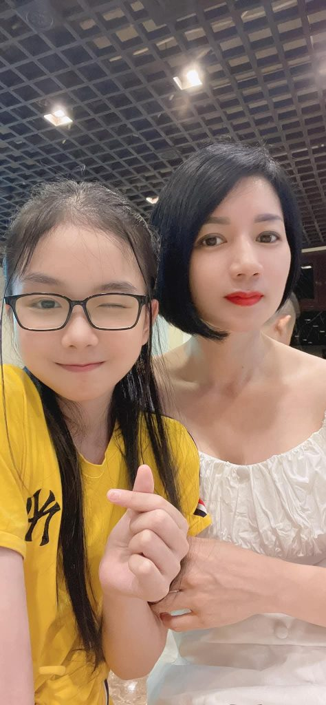

Tôi ngả người ra sau, tựa lưng vào thành giường, để mặc cho cơ thể Nhung bao phủ lấy không gian giữa hai chân mình. Sự chờ đợi này như một cực hình ngọt ngào, khi tôi tận hưởng khoảnh khắc Nhung quỳ giữa háng, bàn tay mảnh dẻ của cô ấy run rẩy vươn tới, bao bọc lấy “cậu nhỏ” đang cương cứng đến mức các mạch máu nổi lên chằng chịt, đỏ au và nóng rực.

Nhung cúi đầu, mái tóc xõa dài rũ xuống che bớt khuôn mặt cô ấy, chỉ để lộ đôi mắt dại đi vì phấn khích đang dán chặt vào thứ “vũ khí” đầy uy quyền của tôi. Cô ấy không vội vàng, mà nhẹ nhàng vuốt ve từ gốc đến tận đỉnh khấc, những ngón tay thuôn dài của cô ấy mải miết mơn trớn, cảm nhận nhịp đập phập phồng của dòng máu đang sôi sục bên trong. Cô ấy thở ra một hơi dài, mùi hương từ lồn Nhung—nồng nàn, hăng hắc vị tình—quyện cùng mùi da thịt, bao vây lấy khứu giác của tôi, khiến tôi suýt chút nữa là không thể kiềm chế mà đè nghiến cô ấy xuống.
“Lần đầu tiên… em nhìn thấy nó gần đến thế này,” Nhung thì thầm, giọng cô ấy khàn đặc, nghe như tiếng rên rỉ đầy mê hoặc. Cô ấy di chuyển bàn tay, miết nhẹ lên lỗ niệu đạo đang rỉ ra một chút dịch nhờn trong suốt, rồi lại vuốt ngược lên phần da quy đầu đang căng bóng. “Từ hôm qua đến giờ, lúc nào nó cũng chực chờ trong lồn em, đâm sâu và băm nát tử cung em… em còn chẳng kịp nhìn xem nó to lớn và đáng sợ đến mức nào khi ở bên ngoài.”
Cô ấy bặm môi, vẻ mặt đầy sự khao khát bệnh hoạn, đưa tay nâng nhẹ tinh hoàn của tôi, cảm nhận độ nặng trĩu của nó trong lòng bàn tay. Nhung liếm nhẹ lên đầu khấc, nếm thử chút dịch mặn nồng, rồi ngước nhìn tôi bằng ánh mắt không còn chút ngượng ngùng, chỉ còn lại sự đĩ thõa của một người đàn bà đã hoàn toàn dâng hiến: “Nó cứng quá… to quá… nó làm em phát điên mỗi khi nhớ lại cảm giác nó lấp đầy lồn em. Bây giờ, em muốn biết… thứ này, khi đi sâu vào miệng em, sẽ khiến em sung sướng đến mức nào. Anh không biết em đang thèm khát nó đến phát run lên đâu… hãy để em hầu hạ anh, làm con điếm nhỏ của anh bằng chính miệng lưỡi này.”
Nhung bắt đầu đưa lưỡi ra, vòng quanh lấy đầu khấc, dùng sự ướt át của nước bọt để làm dịu đi sự thô ráp của da quy đầu. Tiếng “chùn chụt” ướt át vang lên, mỗi cử động của lưỡi cô ấy đều tinh vi và đầy điêu luyện, khiến tôi phải gồng cứng người, bấu chặt ga giường. Cô ấy không chỉ nhìn ngắm, cô ấy đang bắt đầu “nếm”, từng chút một, như thể đang thưởng thức một món quà cấm kỵ mà cô ấy đã khao khát cả đời mới có được. Sự tương phản giữa bàn tay nhỏ nhắn của Nhung và sự to lớn, bạo liệt của thứ mà cô ấy đang vuốt ve tạo nên một cảnh tượng đầy tội lỗi và kích thích, đánh dấu sự bắt đầu của một màn hầu hạ mà tôi biết chắc, sẽ vắt kiệt mọi sức lực của cả hai.
Tôi nhìn xuống, cảm giác bị chinh phục hoàn toàn bởi hình ảnh ngay dưới tầm mắt. Nhung, với mái tóc xõa tung và đôi mắt đẫm tình, đã hoàn toàn trút bỏ lớp vỏ bọc e dè. Bản năng dâm dục của cô ấy bộc lộ một cách kinh ngạc—như thể hàng năm trời bị kìm nén trong cuộc hôn nhân tẻ nhạt giờ đây đã bùng nổ thành một cơn lũ không gì ngăn cản nổi.
Cô ấy không chỉ là đang bú; cô ấy đang “thưởng thức” tôi. Nhung đưa lưỡi liếm dọc theo chiều dài của thân dương vật, từ gốc lên tới đỉnh, rồi dùng đầu lưỡi day mạnh vào khe khấc đầy nhạy cảm. Mỗi cú nhấn lưỡi của cô ấy đều có chủ đích, tạo ra những đợt rung chấn khiến tôi phải trợn ngược mắt, tay bấu chặt vào tóc cô ấy, ép cô ấy sâu hơn nữa.
“Em… em không biết tại sao…” Nhung ngừng lại, hơi thở dồn dập, rồi lại vục sâu xuống. Cô ấy ngậm lấy đầu khấc, dùng đôi môi mím chặt tạo thành một lực hút chân không đầy mãnh liệt. Tiếng “chùn chụt” ướt át vang vọng khắp căn phòng, hòa quyện cùng tiếng thở dốc của chính tôi. Cô ấy vừa mút, vừa dùng lưỡi quấy đảo xung quanh, đôi khi hơi rung cái đầu lưỡi khiến tôi suýt chút nữa là bắn tinh ngay trong họng cô ấy.
Tôi kinh ngạc trước sự điêu luyện đó. Tại sao một người chưa bao giờ chạm vào cặc lại có thể biết cách phối hợp nhịp nhàng giữa lực hút của môi và sự linh hoạt của lưỡi đến thế? Cô ấy dường như đang đọc vị cơ thể tôi, biết chính xác chỗ nào khiến tôi sướng nhất, chỗ nào khiến tôi điên dại nhất.
“Đừng có dừng lại…” tôi gằn giọng, tay tôi luồn vào những lọn tóc của cô ấy, giữ chặt đầu cô ấy cố định.
Nhung đáp lại bằng một cái nhìn đầy đĩ thõa qua hàng mi dày, rồi cô ấy rướn người lên, ngậm trọn lấy nửa thân cặc của tôi vào trong khoang miệng ấm nóng và chật hẹp. Cô ấy đẩy lưỡi lên xuống theo nhịp điệu của một kẻ chuyên nghiệp, đôi mắt vẫn không rời khỏi tôi, như thể muốn thấy sự khoái lạc trên khuôn mặt tôi là bằng chứng cho sự phục tùng của cô ấy. Lưỡi cô ấy trơn trượt, nóng hổi, quấn lấy từng nốt gân nổi cộm trên thân dương vật, khiến tôi cảm thấy như mình đang bị cô ấy vắt kiệt bằng chính miệng lưỡi điêu luyện ấy.
“Chết tiệt, Nhung…” tôi thốt lên, giọng lạc đi vì hưng phấn. Sự điên cuồng này vượt xa mọi dự đoán của tôi. Cô ấy không chỉ bú, cô ấy đang dùng toàn bộ cơ thể và sự khao khát để biến tôi thành nô lệ của cái miệng dâm đãng kia. Trong khoảnh khắc đó, tôi hiểu rằng người đàn bà này sinh ra là để dành cho những trò chơi dục vọng tàn bạo nhất, và tôi chính là kẻ may mắn được khai phá những bản năng đen tối nhất trong cô ấy.
Trong cơn say tình cuồng loạn, khi cái miệng ướt át của Nhung đang vần vũ quanh khấc cặc tôi, một hình ảnh khác bất chợt xẹt qua tâm trí tôi, sắc nét và đầy cám dỗ. Tôi thấy Nhi, cô con gái thanh xuân mơn mởn của Nhung, cũng đang quỳ dưới chân tôi, cũng đôi mắt dại đi vì khao khát y hệt người mẹ lúc này. Cảm giác cái miệng nhỏ nhắn, tươi mới của Nhi đang mút lấy, nuốt trọn lấy tôi hàng ngày như một thói quen nghiện ngập ùa về, trộn lẫn với sự thực tại trần trụi.
Sự trùng hợp đầy tội lỗi này khiến máu trong người tôi như sôi lên. Hai người đàn bà – một là người mẹ đang dần tha hóa, một là người con gái đang độ xuân thì – cả hai đều đang “ăn” lấy tôi bằng sự thèm khát giống hệt nhau. Sự kích thích nhân đôi khiến tôi suýt chút nữa không kìm nén được mà thốt ra cái tên “Nhi”.
Tôi nghiến răng, tay bóp chặt lấy mái tóc của Nhung, ấn mạnh đầu cô ấy sâu hơn vào gốc cặc. “Đúng… đúng rồi… em bú… giống hệt…” tôi suýt buột miệng, nhưng kịp chặn lại bằng một tiếng gầm gừ đè nén trong cổ họng. Sự hoảng hốt thoáng qua khiến cơ thể tôi co giật. Nhung ngẩng đầu lên, gương mặt cô ấy nhòe đi vì dâm dịch và sự mãn nguyện, đôi môi sưng mọng hơi hở ra, dãi dớt chảy dài xuống cằm, nhìn tôi đầy hoang mang xen lẫn tò mò.
“Anh sao vậy? Anh vừa định nói gì à?” Nhung thào thào, hơi thở dồn dập, đôi mắt cô ấy vẫn dán chặt vào thứ đang nằm gọn trong khoang miệng mình. Cô ấy không biết rằng, ngay lúc đó, cô ấy đang chia sẻ thứ khoái lạc này với chính đứa con gái ruột thịt của mình.
Cảm giác tội lỗi vừa lóe lên đã bị sự điên cuồng vùi lấp. Tôi nhìn xuống Nhung, nhìn cái cách cô ấy đang nỗ lực hết mình để làm hài lòng “cậu nhỏ” của tôi, rồi lại nhớ đến Nhi ở nhà cũng đang khao khát được tôi ban phát như thế. Sự thật rằng tôi đang sở hữu cả hai mẹ con, đang biến họ thành những con nghiện tình dục của riêng mình, khiến tôi đạt đến đỉnh điểm của sự thỏa mãn. Tôi không trả lời, chỉ dùng hành động để đáp lại. Tôi dằn mạnh đầu Nhung xuống, ép cô ấy phải tiếp tục nuốt chửng sự cương cứng của mình, để tiếng “chùn chụt” dâm đãng xóa tan mọi suy nghĩ dư thừa. Trong cơn mê loạn, tôi chỉ biết tận hưởng vị ngọt ngào từ cái miệng của Nhung, thầm nghĩ về sự kỳ diệu khi cả hai người đàn bà này đều đang quỳ dưới chân tôi, dâng hiến tất cả cho thứ vũ khí mà tôi sở hữu.
Cơn hưng phấn bùng nổ thành một cơn lũ cuồng nộ không thể kiểm soát. Khi thấy Nhung ngậm trọn lấy phần thân cặc, lưỡi cô ấy quấn chặt lấy đầu khấc một cách điêu luyện đến mức rợn người, tôi không còn đủ kiên nhẫn để dạo đầu thêm nữa. Tôi gầm lên, hai tay ghì chặt lấy mái tóc của Nhung, dùng sức mạnh của một kẻ thống trị ép mạnh đầu cô ấy về phía trước.
“Nuốt hết đi!” tôi gằn giọng, cùng lúc đó, tôi đâm mạnh một cú cuối cùng, lách trọn vẹn “cậu nhỏ” vào tận sâu cuống họng cô ấy. Cảm giác cái cổ họng chật hẹp, nóng rực của Nhung co thắt lấy đầu khấc khiến tôi không còn đường lui. Tôi dồn hết sức lực, giải phóng toàn bộ dòng tinh dịch nóng hổi, đặc quánh từ sâu trong cơ thể mình. Từng đợt, từng đợt tinh dịch như muốn bắn tung ra, xối thẳng vào cuống họng cô ấy, trào dâng lên đầy ắp khoang miệng.
Nhung ú ớ trong cổ họng, đôi mắt cô ấy trợn ngược lên vì bất ngờ trước áp lực quá lớn. Cô ấy cố gắng nín thở, cơ thể run rẩy dữ dội, đôi tay bấu chặt lấy đùi tôi như muốn cào xé. Khi tôi buông tay ra, Nhung vội vàng ngẩng đầu lên, nhưng đã quá muộn để nuốt trọn số tinh dịch khổng lồ đó. Cô ấy ho sặc sụa, những cơn ho khiến lồng ngực cô ấy nảy lên liên hồi, mặt mũi đỏ bừng vì nghẹn.
Dòng tinh trắng đục, hòa cùng với nước bọt và dịch dâm tiết ra trong quá trình bú mớm, tràn đầy ra khóe miệng Nhung, chảy dài xuống tận cằm và cổ. Những giọt nước mắt sinh lý trào ra vì cơn ho sặc sụa, lăn dài trên đôi má ửng hồng, hòa cùng vệt tinh dịch vương vãi tạo nên một bức tranh của sự hoan lạc đầy tội lỗi và nhầy nhụa. Cô ấy há miệng, hít thở từng hơi khó nhọc, tiếng ho át cả tiếng rên rỉ, trong khi tinh dịch vẫn còn rỉ ra chậm rãi từ hai bên mép.
Nhung nhìn tôi, đôi mắt đờ đẫn, một tay cô ấy run rẩy đưa lên quệt đi những vệt trắng đục đang bết dính trên khuôn mặt, rồi cô ấy lại nhìn xuống chính bàn tay mình đầy vẻ mê dại. Cô ấy trông thật nhếch nhác, thật dâm đãng và cũng thật thỏa mãn. Không gian căn phòng nồng nặc mùi vị của dục vọng và tinh dịch, như một minh chứng cho sự đầu hàng tuyệt đối của cô ấy dưới quyền lực của tôi. Nhung nằm vật ra giường, hơi thở vẫn còn đứt quãng, nhưng khuôn mặt cô ấy nở một nụ cười mãn nguyện đến ghê người, như thể vừa được nếm trải vị ngọt ngào nhất thế gian dù phải đánh đổi bằng cả sự kiêu hãnh cuối cùng.